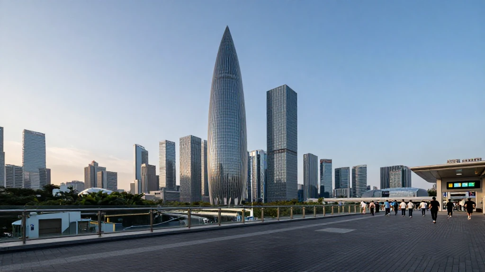
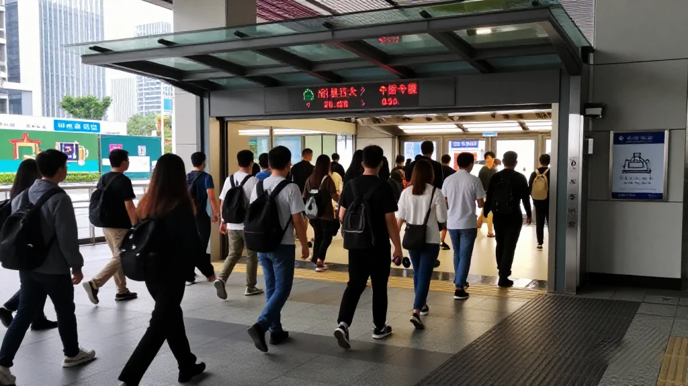
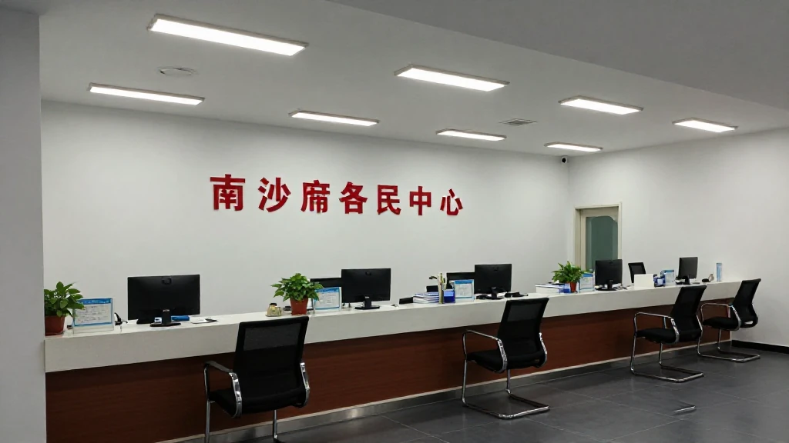
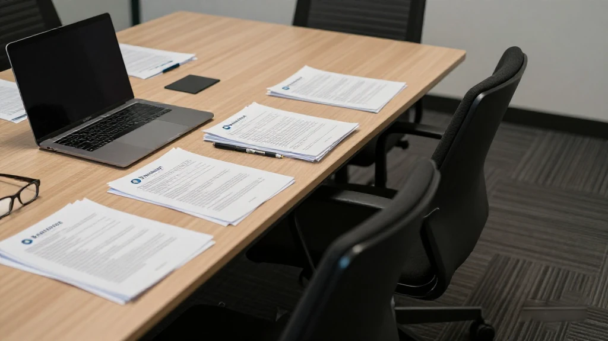

圖片由 AI輔助創作（Z-Image-Turbo）Image by AI (Z-Image-Turbo)
【鄭哥點評】欄目：鄭哥博客點評｜日期：2026-11-13
今日五條全部落在「呢個月要做嘅事」：深圳下周一開始 APEC 會議週，十六至二十日倡議彈性上班、十八至十九日地鐵公交五折；省工信廳小巨人獎補二十日截表，珠三角每家一百萬；廣州開發區最高一千二百萬研發資助今日到期；南沙港澳青年補貼收表至年底。

圖片由 AI輔助創作（Z-Image-Turbo）Image by AI (Z-Image-Turbo)
一、深圳 APEC 會議週下周一開鑼：倡議彈性上班，地鐵公交五折
深圳市十月十五日開咗「綠色出行、暢通有我」發布會，講清楚十一月十八至十九日亞太經合組織第三十三次領導人非正式會議期間嘅交通安排。最實際一條：會議期間地鐵、公交票價五折；新開五十條以上接駁專線，運力班次加兩成。
對企業嚟講，重點係人同貨。官方倡議十六至二十日呢個工作週實行靈活安排，居家辦公、帶薪休假、錯峰上下班由企業同職工協商。貨車分車型限行兩至五日，但輕型、微型封閉式貨車即係麵包車唔受限；快遞企業撞正雙十一後高峰，可用通行證放開部分時段。我嘅判斷：呢五日不如把拜訪、盤點、對賬挪去前後兩週。
來源：深圳本地寶《2026年深圳APEC會議周交通保障措施及綠色出行申報指南》，2026年10月16日｜http://sz.bendibao.com/jt/20261016/1014813.htm
圖片由 AI輔助創作（Z-Image-Turbo）Image by AI (Z-Image-Turbo)
二、廣東小巨人獎補十一月二十日截表，珠三角每家一百萬
廣東省工業和信息化廳十月二十八日印發通知，組織二〇二七年專精特新「小巨人」獎補申報，十一月二十日截表。對象係工信部二〇二六年新認定嘅第八批國家級「小巨人」，一次性發放：珠三角每家一百萬元。只算首次認定，覆核唔通過後再認定嘅唔算。
錢唔係隨便用：限於研發投入、技術成果產業化、數字化改造、上市融資；工資、水電、房租、餐飲一律唔准，房屋、股票、期貨等投資性支出亦唔准，要專賬核算。地市工信部門先剔名單——經營異常、嚴重失信、產品屬淘汰類、近三年重大安全或環保事故、偷漏稅，中一項就出局。我睇呢條門檻比一百萬本身更值得記：獎補係事後嘅，審核係事前翻舊賬。
來源：廣東省工業和信息化廳《關於開展2027年專精特新「小巨人」企業獎補資金申報的通知》，2026年10月28日（搜狐號轉載）｜https://www.sohu.com/a/1095076743_121123896
圖片由 AI輔助創作（Z-Image-Turbo）Image by AI (Z-Image-Turbo)
三、廣州申報窗口盤點：四項省重點研發專項二十三日截表
廣州凱東十一月十日整理嘅《2026年11月廣東省企業可申報項目清單》，把呢個月嘅窗口排成一條時間線：十七日粵澳科技創新聯合資助最高一百萬，二十日技術先進型服務企業認定即所得稅減按一成五，二十三日四個重點領域研發專項——腦機接口、低空與商業航天、量子創新應用、高端科學儀器——同日截表，二十五日B類粵港澳聯合實驗室每家一千萬元。
市區兩級更貼身。廣州開發區二〇二四年度「研發資助（高質量發展三十條）」最高一千二百萬元，今日十三日截；海珠區創業帶動就業補貼單月二十日收表，一次性創業資助一萬元、帶動就業最高三萬元。我提醒一句：清單係服務機構匯總，口徑要回看各局原文，截止日睇錯一日等於白做一個月。
來源：廣州凱東《2026年11月廣東省企業可申報項目清單》，2026年11月10日｜http://www.kaidongkj.com/news_show-3767.html

圖片由 AI輔助創作（Z-Image-Turbo）Image by AI (Z-Image-Turbo)
四、南沙港澳青年補貼開閘，十一月一日起收表至年底
廣州市南沙區人力資源和社會保障局十月二十九日發通知，啟動二〇二六年度促進港澳青年就業創業補貼申領，申報期十一月一日至十二月三十一日，統一喺「南沙@i企」網站填報，依據係穗南人社〔2026〕54號。
呢條對香港讀者最實際嘅係時間：兩個月窗口跨咗年底，好容易「過完年再算」然後過期。南沙嘅設計一向係先落戶、後補貼，補貼分散喺就業、創業、租金、社保幾個籃子。我嘅判斷：難度唔在政策，在材料嘅一致性——商事登記地址、社保參保地、勞動合同主體要對得上。
來源：廣州市南沙區人力資源和社會保障局《關於開展2026年度廣州市南沙區促進港澳青年就業創業補貼申領工作的通知》，2026年10月29日｜https://www.gzns.gov.cn/zwgk/rdzt/hgazczl/cyzc/hgazxzc/gaqncxcy/content/post_11076218.html

圖片由 AI輔助創作（Z-Image-Turbo）Image by AI (Z-Image-Turbo)
五、廣東科技貸款六點七萬億，風險補償最高九成本金
十月二十三日廣東省政府新聞辦發布會，數字好硬：截至二〇二六年九月末，全省科技貸款超過六點七萬億元，同比增長一成七。累計發放財政貼息超過十一點五六億元，覆蓋新增放款超二千億元，惠及企業超五點四萬家次。
更值得中小企留意嘅係風險分擔：省級科技信貸風險補償，符合條件嘅貸款最高可拿九成本金壞賬補償，截至三季度放貸超二百五十億元。「粵科專項保」首批一百零四個產品，至少五成保費補貼免審直享。我嘅睇法：香港公司北上最缺唔係訂單而係本地抵押物，呢套組合本質係用政府信用替代抵押物，前提係有查得到嘅研發投入同知識產權。
來源：南方網、粵學習《廣東科技貸款6.7萬億！這場發布會信息量爆棚》，2026年10月26日｜https://www.gdjr.gov.cn/gdjr/jrzx/dfjr/content/post_46089.html
圖片由 AI輔助創作（Z-Image-Turbo）Image by AI (Z-Image-Turbo)
六、鄭哥點評
五條拼起來係一張十一月時間表：十三日廣州開發區研發資助到期，十六至二十日深圳讓路給 APEC，二十日小巨人獎補截表，南沙港澳補貼收到年底。創業者最常犯嘅錯唔係唔識政策，係把「知道」當成「申報」——清單睇完就放低，等到有人提醒，窗口已經關咗。
我自己嘅做法係每月十號把窗口抄成一張紙，只留三欄：截止日、要交材料、負責人。超過五項就砍。政策紅利有限，注意力更有限——五項做半成，不如兩項做齊。
圖片由 AI輔助創作（Z-Image-Turbo）Image by AI (Z-Image-Turbo)
\[Zheng Ge's Take\] Column: Zheng Ge's blog commentary | Date: 2026-11-13
All five stories land on what has to be done this month. Shenzhen’s APEC week opens on Monday, with flexible working urged from 16 to 20 November and fares halved on the 18th and 19th. The little-giant subsidy closes on 20 November at RMB 1 million per firm in the Pearl River Delta. A district R&D grant worth up to RMB 12 million expires today. Nansha’s Hong Kong and Macau subsidy opened on 1 November and runs to the year end.
圖片由 AI輔助創作（Z-Image-Turbo）Image by AI (Z-Image-Turbo)
1. Shenzhen’s APEC week opens on Monday: flexible work urged, metro and bus fares halved
Shenzhen held a press conference on 15 October setting out transport arrangements for the APEC Economic Leaders Meeting on 18 and 19 November. The most concrete measure: metro and bus fares are halved. More than 50 new feeder routes to metro stations are being added and bus frequency rises 20 per cent.
For companies the issue is people and freight. The city urges flexible working from 16 to 20 November, with home working, paid leave and staggered hours negotiated with staff. Lorries face restrictions of two to five days by vehicle type, though light and mini box vans are exempt, and couriers can apply for passes to reopen some windows after the Singles Day peak. My read: move visits, stock counts and reconciliations to the weeks either side.
Source: 深圳本地寶《2026年深圳APEC會議周交通保障措施及綠色出行申報指南》，2026年10月16日 | http://sz.bendibao.com/jt/20261016/1014813.htm
圖片由 AI輔助創作（Z-Image-Turbo）Image by AI (Z-Image-Turbo)
2. Guangdong’s little-giant subsidy closes on 20 November: RMB 1 million per firm in the Pearl River Delta
Guangdong’s industry and information technology department issued a notice on 28 October opening the 2027 little-giant subsidy, with a deadline of 20 November. It covers the eighth batch of national little giants newly certified in 2026, paid in one instalment: RMB 1 million per firm in the Pearl River Delta. Only first-time certifications count.
The money is restricted to R&D, commercialising results, digital upgrading and listing or financing; wages, utilities, rent and catering are barred, as are investment outlays on property, equities or futures, and it must sit in a separate account. Municipal bureaux first strike firms off for abnormal operations, loss of credit, obsolete products, major safety or environmental accidents or tax evasion. That threshold matters more than the million: the subsidy comes afterwards, but the review goes back through your books.
Source: 廣東省工業和信息化廳《關於開展2027年專精特新「小巨人」企業獎補資金申報的通知》，2026年10月28日（搜狐號轉載） | https://www.sohu.com/a/1095076743_121123896
圖片由 AI輔助創作（Z-Image-Turbo）Image by AI (Z-Image-Turbo)
3. Guangzhou’s filing calendar: four provincial R&D programmes all close on 23 November
A list compiled by Guangzhou Kaidong on 10 November puts November’s windows on a timeline: joint Guangdong-Macau funding of up to RMB 1 million on the 17th; technologically advanced service enterprise status, taxed at 15 per cent, on the 20th; four key R&D programmes, on brain-computer interfaces, low-altitude and commercial space, quantum applications and high-end instruments, all on the 23rd; and category B joint laboratories on the 25th at RMB 10 million each.
City and district schemes are closer to home. The Guangzhou Development District’s 2024 R&D grant, worth up to RMB 12 million, closes today. Haizhu files on the 20th of odd months: RMB 10,000 for a first venture, up to RMB 30,000 for job creation. This is an agency summary, so check the originals; misreading a deadline by a day wastes a month.
Source: 廣州凱東《2026年11月廣東省企業可申報項目清單》，2026年11月10日 | http://www.kaidongkj.com/news_show-3767.html
圖片由 AI輔助創作（Z-Image-Turbo）Image by AI (Z-Image-Turbo)
4. Nansha opens its Hong Kong and Macau youth subsidy window until the end of the year
The human resources bureau of Guangzhou’s Nansha district issued a notice on 29 October opening the 2026 round of subsidies for Hong Kong and Macau youth. The window runs from 1 November to 31 December, filed on the Nansha iqi platform under document Sui Nan Ren She 2026 No 54.
For Hong Kong readers the practical point is timing: a two-month window across the new year is easily deferred and missed. Nansha settles first and subsidises later, and the money is split across jobs, startups, rent and social insurance, My judgement: the difficulty is not policy but consistency of paperwork, since the registered address, the social insurance jurisdiction and the employer on the labour contract must line up.
Source: 廣州市南沙區人力資源和社會保障局《關於開展2026年度廣州市南沙區促進港澳青年就業創業補貼申領工作的通知》，2026年10月29日 | https://www.gzns.gov.cn/zwgk/rdzt/hgazczl/cyzc/hgazxzc/gaqncxcy/content/post_11076218.html
圖片由 AI輔助創作（Z-Image-Turbo）Image by AI (Z-Image-Turbo)
5. Guangdong’s tech loan book passes RMB 6.7 trillion, with risk cover up to 90 per cent of principal
The numbers from the provincial information office briefing on 23 October are hard. At the end of September 2026 tech loans exceeded RMB 6.7 trillion, up 17 per cent year on year, More than RMB 1.156 billion of interest subsidy has been paid, covering over RMB 200 billion of new lending and 54,000 company instances.
What small firms should watch is risk sharing: qualifying tech loans can recover up to 90 per cent of principal losses, with over RMB 25 billion lent by the third quarter. The first Yueke insurance list covers 104 products with at least half the premium covered without prior approval. My view: Hong Kong companies heading north lack local collateral more than orders, and this substitutes government credit for it, provided your R&D and IP are verifiable.
Source: 南方網、粵學習《廣東科技貸款6.7萬億！這場發布會信息量爆棚》，2026年10月26日 | https://www.gdjr.gov.cn/gdjr/jrzx/dfjr/content/post_46089.html
圖片由 AI輔助創作（Z-Image-Turbo）Image by AI (Z-Image-Turbo)
6. Zheng Ge's Take
Together the five form a November timetable: the district grant expires on the 13th, Shenzhen steps aside for APEC from the 16th to the 20th, the little-giant subsidy closes on the 20th and Nansha runs to the end of the year. The usual mistake is not ignorance but treating knowing as applying: the list gets read and put down, and by the time someone reminds you the window has shut.
My habit is to copy the month’s windows onto one sheet on the 10th with three columns: deadline, documents, owner. More than five and I cut. Policy money is finite, attention more so: five jobs half done are worth less than two done properly.